Единая система для SaaS-продукта Golova и всей экосистемы связанных продуктов. Три уровня токенов — примитивы → семантика → компоненты — так изменения палитры не ломают компоненты, собранные поверх неё.
Структура: css/tokens.css — примитивы и семантические токены
(цвет, шрифты, отступы, радиусы, тени), css/components.css — компоненты
поверх токенов, включая полный набор форм. fonts/ и logos/ —
фирменные ассеты. Шрифты: Roboto Flex — весь UI-текст, PragmataPro — только
логотип и декоративные акценты.
Бренд
Базовое описание Golova как продукта, миссии, видения и ценностей бренда. Этот раздел задает смысловую рамку для интерфейса, коммуникаций и продуктовых решений.
Что такое Golova
Golova — профессиональная SaaS-платформа для компаний, занимающихся арендой AV-оборудования и техническим обеспечением мероприятий. Система объединяет процессы планирования, управления оборудованием, персоналом, финансами, документами и логистикой в едином рабочем пространстве.
Наша цель — стать операционной системой индустрии, так же как POS-система стала стандартом для ресторанов или ERP — для производства.
Миссия
Упростить управление сложными проектами и оборудованием, автоматизировав рутинные процессы и предоставив единую цифровую среду для всей команды.
Golova помогает компаниям быстрее принимать решения, снижать количество ошибок и сосредоточиться на реализации проектов, а не на работе с таблицами, файлами и разрозненными сервисами.
Видение
Мы создаём экосистему продуктов, которая станет единым стандартом работы для компаний AV rental и event production.
Основная платформа дополняется специализированными сервисами, объединёнными общими данными и AI-инструментами.
Ценность бренда: Практичность
Каждый элемент интерфейса существует для решения конкретной рабочей задачи. Мы избегаем декоративности ради декоративности.
Принципы дизайна
Golova — профессиональная B2B SaaS-платформа для компаний, занимающихся арендой AV-оборудования и техническим обеспечением мероприятий. Каждый экран должен в первую очередь помогать быстро выполнять ежедневные рабочие задачи.
Интерфейс должен ощущаться как
- инженерный;
- профессиональный;
- насыщенный информацией;
- спокойный и надежный;
- ориентированный на ежедневную работу.
Избегаем
- игрового или стартапного стиля;
- больших карточек без необходимости;
- градиентов и декоративных иллюстраций;
- тяжелых теней;
- чрезмерного количества пустого пространства.
Визуальный язык
- минимализм и плоский интерфейс;
- тонкие разделители вместо толстых рамок;
- практически без теней;
- скругления только там, где они нужны;
- иерархия строится типографикой, а не цветами.
Как использовать
Компоненты ссылаются только на семантические токены (text/*, bg/*...), никогда напрямую на neutral/* или brand/*.
Не хардкодим hex в компонентах и не создаём новые цвета «по ощущению» — сначала примитив, потом семантика.
Все поля форм — 4px радиус, без исключений. Это единообразный, узнаваемо угловатый язык форм.
Не скругляем формы под общий radius-lg карточек — формы концептуально более острые, чем контейнеры.
Типографика
Типографика Golova построена на единой системе размеров, интервалов и ролей текста. Пользователь может переключать гарнитуру интерфейса, при этом размеры, иерархия и компоненты остаются неизменными.
Работа с гарнитурами
В системе поддерживается несколько гарнитур. Переключение влияет только на внешний вид текста и не изменяет размеры, отступы или поведение компонентов.
Все гарнитуры используют единую типографическую шкалу и одинаковые роли текста.
Не создаём отдельные размеры, line-height или компоненты под каждую гарнитуру.
Правила использования
- Один экран — одна гарнитура.
- Не смешивать разные гарнитуры внутри одного интерфейса.
- Иерархия строится размером и насыщенностью, а не цветом.
- Для Pragmata Pro Mono использовать только рекомендованные параметры Line Height и Letter Spacing.
- Переключение гарнитуры не должно влиять на размеры компонентов или нарушать сетку интерфейса.
Текущая гарнитура
Preview автоматически показывает рекомендации для гарнитуры, выбранной в левом меню.
Pragmata Pro Mono
ABCDEFGHIJKLMNOPQRSTUVWXYZ abcdefghijklmnopqrstuvwxyz 1234567890
Recommended settings
Используется
- Таблицы
- ERP
- Аналитика
- Рабочие экраны
Пример
Font Switching Contract
Смена шрифта — пользовательская настройка интерфейса. Компоненты не знают конкретную гарнитуру и всегда читают один алиас.
Token
Runtime
<html data-ui-font="roboto">
body {
font-family: var(--font-body);
}Цвет
Трёхуровневая модель: примитивы задают физические значения, семантика называет их по роли в интерфейсе, компоненты используют только семантику — никогда не примитивы напрямую. SaaS Platform Palette фиксирует продуктовые имена токенов, которые можно передавать в разработку и Figma.
Collection 1 · Primitive / Neutral
Базовая графитовая шкала. Шаги неравномерные (90→80→70→50→30→20→0) — так и задумано.
Collection 2 · Primitive / Brand
Основные и их soft-варианты (10% opacity) для подложек.
SaaS Platform Palette
Продуктовые токены для основной SaaS-платформы. Старые neutral/* и brand/* остаются для обратной совместимости компонентов.
Collection 3 · Semantic
Роль → примитив. Компоненты ссылаются только на эти имена.
warning/rating используется для звезды рейтинга в карточке товара. Не используем этот цвет
как общий статус ошибки или предупреждения без отдельного продуктового правила.
Применение цветов
Как семантика ложится на конкретные UI-паттерны.
Текст
Фоны
Границы
Состояния
Кнопки
Layout
Интерфейс адаптируется не под разрешение монитора, а под ширину viewport. Компоненты строятся на responsive grid и spacing scale.
Responsive philosophy
В ERP самый важный вопрос — не breakpoint, а что меняется при переходе между ними. Количество колонок, навигация и поведение панелей должны меняться предсказуемо.
Сначала определяем доступную ширину viewport, затем выбираем сетку, плотность и поведение навигации.
Не привязываем интерфейс к конкретным моделям устройств или физическому разрешению монитора.
Responsive grid
Количество колонок меняется в зависимости от ширины viewport. Это базовая сетка для продуктовых экранов Golova.
Width
Layout
Grid
Navigation
iPhone и Android adaptation
Мобильная версия SaaS-интерфейса не должна быть уменьшенной копией desktop. На телефоне показываем рабочий минимум: главное действие, текущий статус, поиск, фильтры и быстрый доступ к деталям.
iPhone
Android
Таблицы превращаем в список сущностей: ключевой идентификатор, статус, сумма/дата и действие. Детали раскрываются на отдельном экране или в bottom sheet.
Фильтры, сортировку и массовые действия переносим в drawer или bottom sheet, чтобы не съедать рабочую ширину.
Не показываем desktop-таблицу с горизонтальным скроллом как основной мобильный сценарий.
Не размещаем критические кнопки рядом с системными жестами без safe-area отступов.
Скругления
Система в целом угловатая. Формы — самые острые: 4px флэт, без исключений (кроме переключателя-свитча — он физическая пилюля по смыслу).
Тени
Незаметны в покое, раскрываются на интерактиве. Focus/error-ring — отдельные токены для полей форм.
Логотип
Логотип используется как рабочий брендовый идентификатор внутри B2B-интерфейса. По умолчанию выбираем полный логотип, знак используем только там, где полная версия физически не помещается.
Logo Sizes
Четыре рабочих размера закрывают интерфейс, документацию и брендовые материалы.
Logo Variants и Scale
Оставляем два допустимых варианта: Symbol и Full Logo. Оба масштабируются по общей сетке Logo Sizes.
{kind=link}
{kind=link}
{kind=link}
{kind=link}
{kind=link}
{kind=link}
{kind=link}
{kind=link}
Minimum Size
Ниже 20 px текстовая часть становится нечитаемой. Для меньших областей используем Symbol.
Safe Area
Вокруг логотипа оставляем пространство не меньше высоты символа или 8 px, что больше.
В продукте используем Full Logo размера S 24 px. В плотных местах переходим на Symbol, а не ужимаем полный логотип ниже минимума.
Не растягиваем, не меняем пропорции, не добавляем тени или градиенты, не перекрашиваем текст отдельно от знака.
Используем только два SVG-ассета: Symbol и Full Logo. В темной теме они инвертируются системным стилем.
Не используем Blue, Product Lockup, отдельные white/monochrome карточки или новые логотипы под частные случаи.
fonts/PragmataProMono-Regular.woff2.
Веб-лицензия FSD: один сайт, лимит 10 000 просмотров/мес. Загружен только Regular.
Иконки
В интерфейсах используем Bootstrap Icons. Иконки подключены как шрифт через CDN и вызываются классами bi bi-*.
Core Set
Базовый набор для навигации, действий, таблиц, форм и системных состояний.
bi bi-searchbi bi-plus-lgbi bi-downloadbi bi-uploadbi bi-pencilbi bi-trash3bi bi-three-dotsbi bi-slidersbi bi-gearbi bi-list-ulbi bi-grid-3x3-gapbi bi-tablebi bi-check-lgbi bi-x-lgbi bi-exclamation-trianglebi bi-info-circlebi bi-chevron-downbi bi-arrow-rightИспользуем системные классы bi bi-* и красим иконки через semantic tokens: icon/*, text/*.
Не смешиваем Bootstrap Icons с другими наборами без отдельного решения в дизайн-системе.
Иллюстрации
Иллюстрации используем как брендовые материалы и вспомогательную графику. Не подменяем ими рабочий интерфейс и не превращаем продуктовые экраны в маркетинговые.
Brand Mechanics
Базовая техническая иллюстрация для брендовых и документационных материалов.


{kind=link}
Product Workflow 1
Дополнительная SVG-иллюстрация. Темные контуры переключаются на светлые в dark theme.


{kind=link}
Product Workflow 2
Дополнительная SVG-иллюстрация. Графитовые линии адаптируются под темную тему.


{kind=link}
Бейджи и теги
Табы
<div class="tabs">
<button class="tab active">Все</button>
<button class="tab">В аренде</button>
<button class="tab">Резерв</button>
</div>Формы
Полный набор форм-компонентов на базе переменных Golova. Все контролы — 4px радиус
(--radius-form), фокус — рамка border/focus + мягкое кольцо
shadow-focus-ring, ошибка — border/error + shadow-error-ring.
<label class="field">
<span class="field-label">Название компании <span class="req">*</span></span>
<input class="ctrl" type="text" placeholder="ООО Ромашка">
<span class="field-hint">Юридическое или рабочее название клиента.</span>
</label>Карточка товара
<article class="pcard">
<div class="img">
<span class="badge badge-neutral">Продажа б/у</span>
<div class="fav">♥</div>
фото товара
</div>
<div class="body">
<h3 class="title">Акустическая система Yamaha DXR12</h3>
<p class="price">8 500 ₽ <span class="kit-flag"><i></i>Комплект</span></p>
<div class="seller"><span class="star">★</span> 4.9 · Pro Sound</div>
<div class="loc">Москва · самовывоз</div>
<button class="cta">Подробнее</button>
</div>
</article>Модалки
Три сценария под самые частые действия у сложных таблиц/деревьев: форма-редактор строки, подтверждение удаления, настройка видимости колонок. Структура одинаковая: заголовок с подписью и крестиком → тело (скроллится само, если контента много) → футер с действиями, прижатыми вправо.
Редактировать позицию
Спецификация · Звуковое оборудование — аренда
<div class="modal">
<div class="modal-header">
<div>
<h3>Редактировать позицию</h3>
<p>Изменения применятся к текущей строке.</p>
</div>
<button class="btn btn-sm btn-icon-only btn-ghost modal-close" aria-label="Закрыть">
<i class="bi bi-x-lg"></i>
</button>
</div>
<div class="modal-body">...</div>
<div class="modal-footer">
<button class="btn btn-md btn-secondary">Отмена</button>
<button class="btn btn-md btn-primary">Сохранить</button>
</div>
</div>Удалить 44 позиции?
Раздел «Звуковое оборудование — аренда» будет удалён из спецификации вместе со всеми вложенными строками. Это действие необратимо.
Параметры таблицы
Видимость и порядок колонок
Заголовок модалки — краткий, подпись под ним уточняет контекст (где именно мы редактируем). Крестик закрытия — всегда круглый ghost справа.
Не ставим danger-действие первым/слева в футере — порядок всегда: второстепенное слева, главное (в т.ч. деструктивное) справа.
Темная тема
Темная версия строится тем же способом, что и светлая: примитивы → семантика → компоненты.
Компоненты не получают отдельные dark-классы; меняются значения семантических токенов через
.theme-dark или [data-theme="dark"].
Primitive / Dark Surface
Отдельная шкала темных поверхностей нужна, чтобы не ломать существующую neutral-шкалу.
Semantic Mapping
Названия токенов не меняются между темами; меняются только значения.
Text
Background
Border
State
Рабочий экран в темной теме
Плотный B2B-интерфейс: минимум декора, видимые разделители, спокойная иерархия.
Темная тема меняет только semantic/component tokens. Разметка компонента остается такой же, как в светлой теме.
Не создаем отдельные классы вроде .button-dark и не хардкодим цвета в компонентах.
Футер
Developer Handoff
Этот раздел нужен разработчикам и ИИ-агентам, которые собирают прототипы или переносят паттерны в продукт. Источник истины остается в токенах, компонентах и правилах витрины.
Runtime CSS
css/tokens.css и css/components.css подключаются напрямую в HTML-прототип.
Machine Tokens
tokens.json можно читать агентам, скриптам, Figma-плагинам и будущему экспорту токенов.
AI Instructions
AI_USAGE.md — короткий контракт для Claude Code, Codex и других агентов.
Copy Snippets
Базовые HTML-snippets лежат рядом с кнопками, табами, формами, модалками и карточкой товара.
Где взять файлы
Разработчик или ИИ-агент может взять файлы из репозитория или скачать прямо из этой статической витрины.
Downloads
Работает при открытии через static server или из репозитория.
Минимальный prompt для ИИ-агента
Можно вставить в Claude Code перед созданием прототипа Golova.
Перед началом прочитай AI_USAGE.md, tokens.json, css/tokens.css и css/components.css.
Собери прототип Golova как плотный B2B SaaS/ERP экран.
Используй существующие CSS variables и component classes.
Не хардкодь цвета, не делай лендинг, не используй градиенты и декоративные иллюстрации.
Поддержи светлую и темную тему через data-theme="dark".